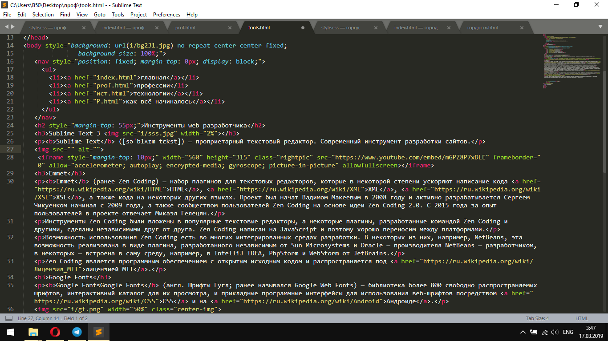
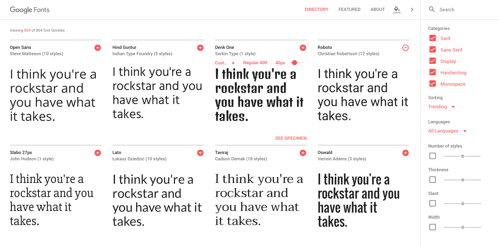

Sublime Text ([səˈblʌɪm tɛkst]) — проприетарный текстовый редактор. Современный инструмент разработки сайтов.
Эта страница на этапе разработки в Sublime Text 3.
Emmet (ранее Zen Coding) — набор плагинов для текстовых редакторов, которые в некоторой степени ускоряют написание кода HTML, XML, XSL, а также кода на некоторых других языках. Проект был начат Вадимом Макеевым в 2008 году и активно разрабатывается Сергеем Чикуенком начиная с 2009 года, а также сообществом пользователей Zen Coding на основе идеи Zen Coding 2.0. C 2015 года за опыт пользователей в проекте отвечает Микаэл Гелецян.
Инструменты Zen Coding были вложены в популярные текстовые редакторы, а некоторые плагины, разработанные командой Zen Coding и другими, сделаны независимыми друг от друга. Zen Coding написан на JavaScript и поэтому хорошо переносим между платформами.
Возможность использования Zen Coding есть во многих интегрированных средах разработки. В некоторых из них, например, NetBeans, эта возможность реализована в виде плагина, разработанного независимым от Sun Microsystems и Oracle — производителя NetBeans — разработчиком, в некоторых — встроена в саму среду, например, в IntelliJ IDEA, PhpStorm и WebStorm от JetBrains.
Zen Coding является программным обеспечением с открытым исходным кодом и распространяется под лицензией MIT.
Google FontsGoogle Fonts (англ. Шрифты Гугл; ранее назывался Google Web Fonts) — библиотека более 800 свободно распространяемых шрифтов, интерактивный каталог для их просмотра, и прикладные программные интерфейсы для использования веб-шрифтов посредством CSS и на Андроиде.
Каталог шрифтов Google предназначен для поиска и исследования шрифтов, сервис широко используется обслужив более 17 триллионов запросов. Среди популярных шрифтов: Open Sans, Roboto, Lato, Slabo 27px, Oswald и Lobster.
0